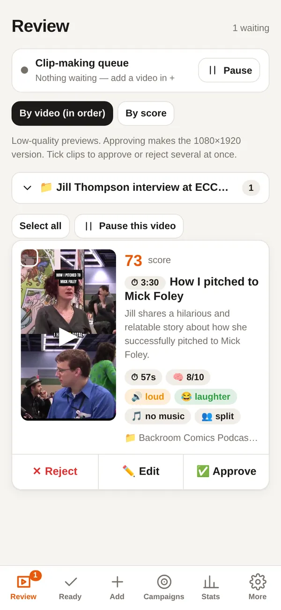
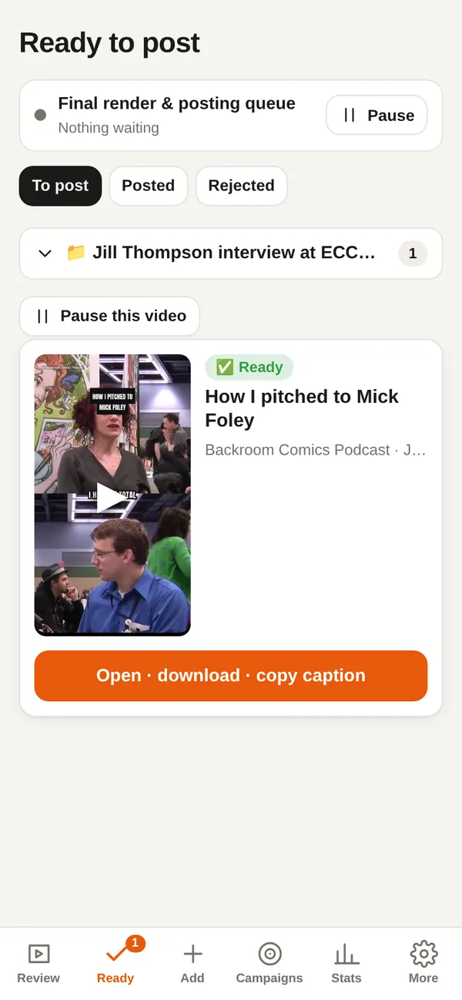

Case study
Clip Studio
Long videos in, captioned vertical clips out. An AI picks the moments; a human approves every clip.
- Python
- FastAPI
- FFmpeg
- Groq Whisper
- Gemini
- YuNet
- SQLite
- PWA
The problem
Turning hours of podcasts and streams into good short clips is slow manual work: find the moment, cut it, reframe it to 9:16, caption it, post it everywhere, and only use sources that allow it.
What I built
- Paste a link, upload a file, or let watchers follow YouTube channels (WebSub push + RSS + Data API), Twitch (EventSub) and Kick, including live-stream recording.
- Word-level transcription (Groq Whisper, Deepgram as backup) and FFmpeg loudness analysis.
- Gemini picks the moments as word ranges, writes a hook and caption, and checks the audio (music excluded, laughter boosted). Cuts snap to sentence boundaries.
- Face detection (YuNet) decides the layout and drives a smooth crop path; karaoke-style captions are burned in with FFmpeg/libass.
- Low-res previews first; approving renders the final 1080×1920 and queues auto-posting (Instagram/Facebook Reels, TikTok drafts) with schedules, pausable queues and plain-language statuses.
- Hard rules in code: permission-based sources only, no music, nothing published without approval, creators credited.
Highlights


Demo footage: a Creative Commons video from Wikimedia Commons, credited in Credits. No real clips or accounts are shown.
Try it
Watch the pipeline
A synthetic walk-through of what happens to one video: transcript, loudness, the chosen moment, the face crop and the captions.
How it works
- 1Sources
- 2Download / record
- 3Transcribe (words)
- 4Score moments (LLM + audio)
- 5Face crop + captions
- 6Human review
- 7Render + post
Engineering notes
- Runs next to five other apps on 2 vCPU / 2 GB: the worker is capped at one core and 900 MB, one job at a time, and source files are deleted after rendering.
- Every pipeline step is resumable, so a restart never loses work.
- Detection is quota-free: YouTube push notifications and RSS, plus 1-unit API lookups, instead of polling search.
- Posts never retry blindly: each failure gets a named reason and the next step to take.
How I build
Designed, built, tested and deployed by me with an AI coding assistant (Claude Code): I set the requirements, review every change, test on scratch copies with fake data, and run it in production.
Credits
Footage in the Clip Studio screenshots and loop: “Backroom Comics Podcast – Jill Thompson Interview at ECCC 2010 Part 3” by Backroom Comics Podcast, licensed under CC BY 3.0, via Wikimedia Commons. Cropped to 9:16 and captioned by Clip Studio. Used only to demonstrate the tool; it was never posted anywhere.